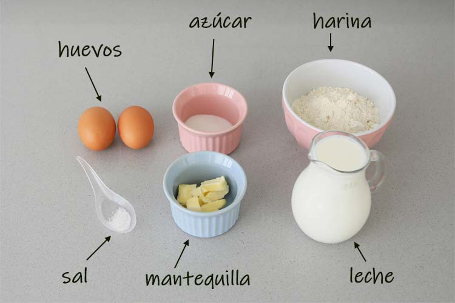
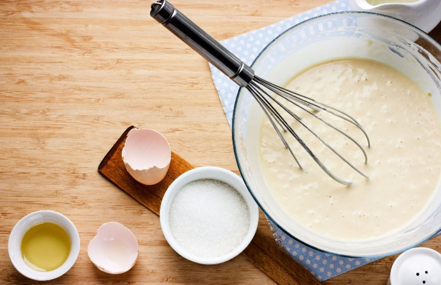
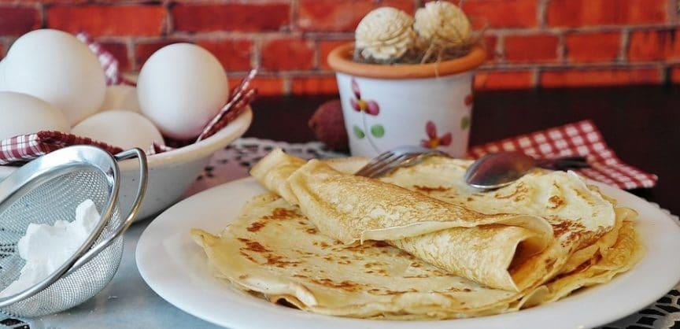
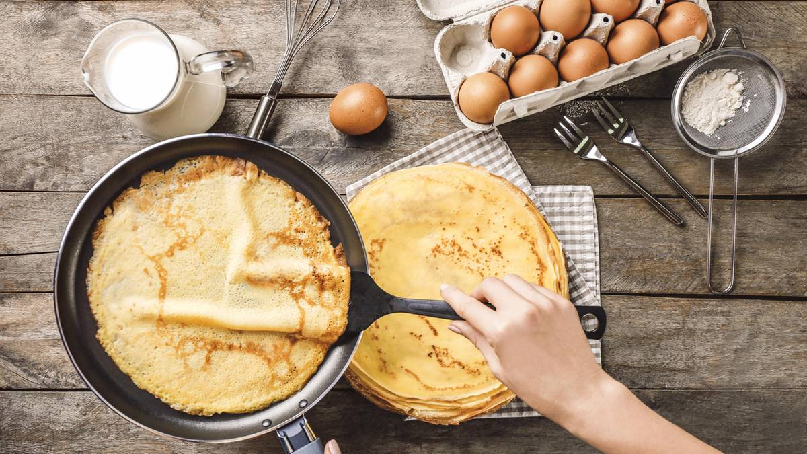
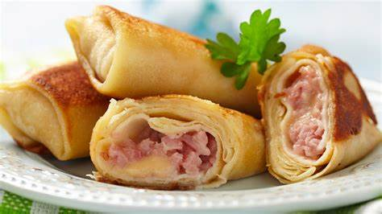
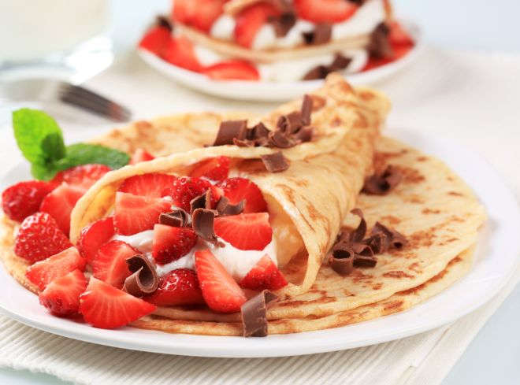
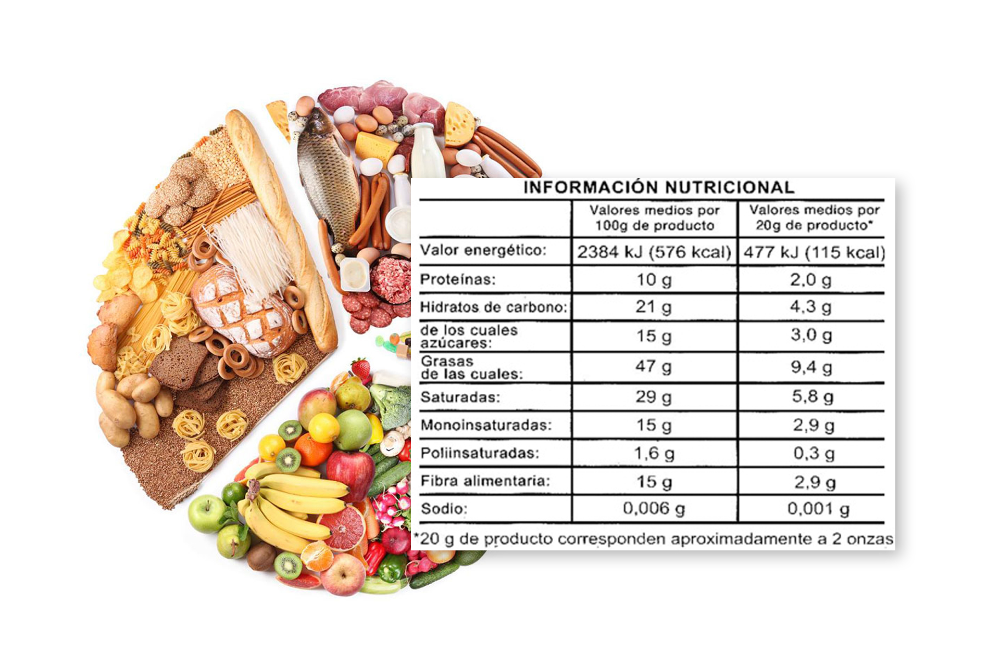

Crepes
Hoy vamos a ver cómo preparar creps o crepes, unas tortas finísimas que se pueden servir de mil formas, tanto saladas como dulces, según los ingredientes que utilicemos.
Para elaborar crepes hay que preparar una mezcla con harina, huevos y leche, casi líquida, a diferencia de las tortitas americanas, y se cocinan en una sartén antiadherente (hay algunas especialmente destinadas a preparar crepes). Si son dulces podemos aromatizar la masa, por ejemplo con vainilla y si son saladas, se puede añadir a la mezcla especias o hierbas.
Ingredientes

- 2 huevos
- 150 g de harina
- 250 ml de leche
- 1 cucharada de azúcar
- 1 cucharada de aceita de oliva virgen extra
- 1 pizca de sal
- Mantequilla para engrasar la sartén
- Opcional: nutella, sirope de caramelo, sirope de chocolate, sirope de fresa, fresas y nata para cuando estén listos ponerle cosas por encima
¿Cómo hacer masa de crepes?
Preparamos la masa de los crepes

- Ponemos en una jarra todos los ingredientes y batimos con la batidora, debemos de tener una mezcla sin grumos
- Esta mezcla se puede utilizar en el momento, pero siempre es aconsejable dejarla reposar en la nevera una hora
Cocinamos los crepes

- Una vez que ha reposado, mezclamos un poco la jarra con una cuchara, debe tener una textura de crema líquida, si por lo que sea os ha quedado muy espesa podéis añadir un chorrito de leche.
- Engrasamos una sartén antiadherente con una pizca de mantequilla, muy poco.
- Cuando esté caliente la sartén añadimos un poco de masa y movemos la sartén girando para ayudar a la masa que se extienda, cuando veamos que los bordes comienzan a dorarse le damos la vuelta.
- Habitualmente este primer crepe se desecha ya que contiene demasiada grasa y además no queda bien.
- Para los siguientes crepes ya no hace falta añadir más mantequilla, se hacen muy rápido así que no os preocupéis, hay gente que hace dos crepes a la vez usando dos sartenes.
¿Cómo conservar los crepes calientes?

- Para que los crepes se mantengan calientes hasta que terminemos de prepararlos, ponemos un cazo con agua a calentar, con fuego muy suave, encima colocamos un plato con un trozo grande de papel de aluminio y encima vamos poniendo cada creps, una encima de otra. Se pueden apilar sin problema, porque no se pegan.
- También podemos envolver todas en papel aluminio y guardarlas en la nevera hasta dos días, luego podemos calentarlas una vez rellenas o si son para utilizar en frío directamente.
Recetas de crepes salados de jamón y queso

- Sobre cada crepe ponemos una loncha de jamón york yuna de queso, enrollamos y servimos.
¿Cómo hacer crepes dulces de nutella, fresa y nata?

- Ponemos el crepe en un plato le untamos la nutella con el cuchillo.Y una vez untada la nutella le echamos la fresa cortadita en trozos pequeños, cuando le hayas puesto los trozos que quieras. Lo enrollas y le echas la nata por encima.
Información nutricional

Dependerá de los ingredientes que le añadas al crepe
- 90kcal
- 16 g carbohidratos
- 2 g proteína
- 1.1 g grasa saturada
- 0.2 g grasa saturada
- 32 mg colesterol
- 1.3 g fibra